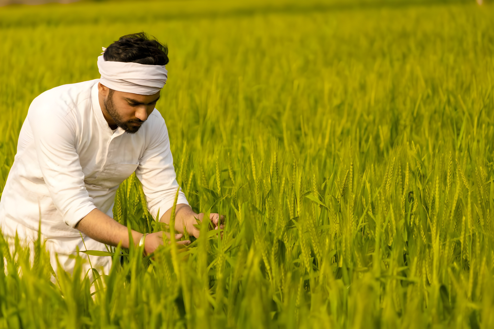

Smarter.
Healthier.
Sustainable.
Satellite-guided crop planning for resilient farms.
Check Your FarmPowered by Satellite Intelligence
Built for farmers, backed by global research and space data.

Satellite Insights
Real-time monitoring using NASA and ISRO data streams like NISAR, SMAP, and Sentinel.

Smart Crop Planning
AI-driven recommendations to optimize crop rotation choices and boost long-term yields.

Water & Soil Analysis
Track soil moisture levels and nutrient health precisely to conserve resources.
Turning Space Data Into Everyday Harvests
Unpredictable weather, depleting groundwater, and tired soil make farming harder every season. Most satellite tools are built for scientists—not the people actually working the land.
AgroShift translates live NASA and ISRO Earth-observation feeds into plain, step-by-step guidance so every farmer can protect their soil, save water, and grow higher yields.

Built for the Field: Core Features
Designed with zero clutter, high contrast, and simple visual cues so every tool is easy to navigate.
Soil Health Tracker
Live satellite readings on nitrogen, phosphorus, and organic carbon levels to prevent soil exhaustion before it starts.
Smart Crop Rotation Planner
Step-by-step guidance on which crops to alternate each season to naturally restore nutrients and boost yields by up to 27%.
Water & Irrigation Advisor
Real-time soil moisture mapping powered by NASA SMAP to prevent over-watering and conserve vital groundwater.
Local Weather & Risk Alerts
Early warnings for extreme weather, droughts, or sudden frost tailored specifically to your farm sector.
Trusted by Growers on the Ground
How simple, satellite-backed guidance is helping farms thrive across changing seasons.
"Before AgroShift, I guessed when to water and what to plant next. Following the rotation plan boosted my harvest by 20% while using far less groundwater."
"Most apps are full of confusing charts. AgroShift gives clear, simple steps I can read in seconds out in the field—it actually respects a farmer's time."
"Catching soil moisture drops early saved my entire winter crop during a dry spell. It feels like having an agricultural scientist in my pocket."